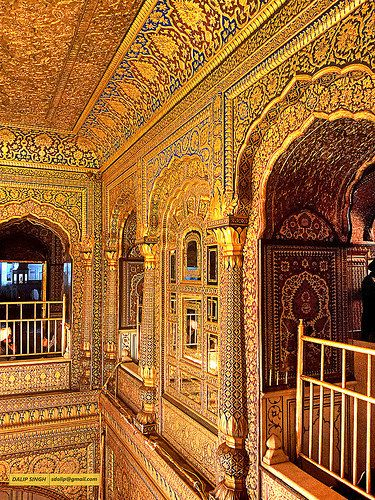

{kind=link}
Sikhism and its Artistic Legacy
Sikhism, founded by Guru Nanak Dev Ji in the 15th century, has inspired a rich tradition of art and crafts that reflects spiritual and cultural values. The art forms are deeply intertwined with religious expression, featuring intricate designs, vibrant colors, and themes of unity, devotion, and equality.
Key Artistic Elements in Sikhism:
- Gurudwara Architecture: Sikh places of worship, such as the Golden Temple (Harmandir Sahib) in Amritsar, are masterpieces of architecture. The gilded domes, marble inlay work, and reflection pools represent serenity and devotion.
- Domes and Glided Structures: Most Gurudwaras feature majestic domes, often gilded with gold, symbolizing the eternal nature of God. These domes, supported by a central structure, are both functional and decorative, reflecting a blend of Mughal and Punjabi architectural styles.
- The Nishan Sahib (Sikh Flag): Every Gurudwara features a tall flagpole called the Nishan Sahib, bearing the Sikh emblem. It is a beacon of spiritual guidance and a reminder of Sikh values.